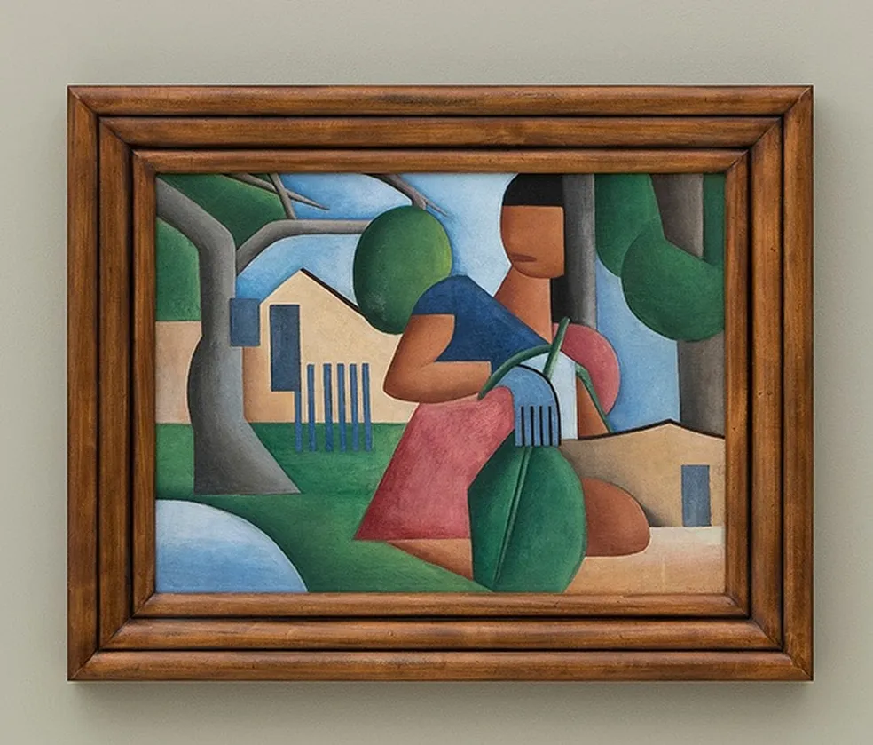

Simplificação das formas
Os elementos são representados de maneira simplificada, sem buscar uma reprodução totalmente realista.
Modernismo Brasileiro
ARTE BRASILEIRA • 1923

Uma pintura que representa a identidade brasileira por meio de cores, formas e elementos da vida cotidiana.
Pintada em 1923, A Caipirinha é uma obra de Tarsila do Amaral que representa a busca por uma identidade artística brasileira.
A pintura apresenta uma figura feminina relacionada à vida no interior, cercada por elementos que remetem à cultura e à natureza do Brasil.
A obra foi produzida durante o período em que Tarsila estudava arte em Paris. Nesse momento, a artista buscava unir as influências das vanguardas europeias às suas lembranças e experiências brasileiras.
A pintura também está relacionada às memórias da infância de Tarsila, vivida em fazendas do interior paulista.
Tarsila do Amaral
1923
Modernismo
Óleo sobre tela
As cores ajudam a transmitir a identidade brasileira presente na obra.
Cria contrastes e contribui para a composição visual da pintura.
Remete à natureza e à vegetação brasileira, destacando a relação com o ambiente.
Acrescenta luminosidade e destaque, contribuindo para a expressividade da obra.
Ajuda a destacar a figura e cria contraste com outras cores da composição.
Tarsila utiliza cores intensas e contrastantes para criar uma composição expressiva. A combinação entre cores quentes e frias contribui para destacar os elementos da pintura.
As cores não servem apenas para reproduzir a realidade, mas também para transmitir sensações e valorizar a identidade brasileira.
Elementos que ajudam a compreender a obra e sua relação com o Modernismo.
Os elementos são representados de maneira simplificada, sem buscar uma reprodução totalmente realista.
A organização das formas demonstra a influência das tendências modernas e dos estudos de Tarsila com o Cubismo.
A obra apresenta referências à cultura, à natureza e à vida cotidiana brasileira, valorizando elementos nacionais.
Tarsila do Amaral foi uma das principais artistas do Modernismo brasileiro. Nasceu em 1º de setembro de 1886, em Capivari, no estado de São Paulo.
Sua produção artística foi fundamental para a valorização da cultura brasileira. Suas pinturas apresentam cores vivas, formas marcantes e referências à paisagem e à cultura do Brasil.
Ao lado de outros artistas e intelectuais, Tarsila contribuiu para a construção de uma arte moderna com características brasileiras.
A Caipirinha possui grande importância para a história da arte brasileira porque representa uma etapa fundamental na construção da identidade artística de Tarsila do Amaral.
A obra demonstra como a artista começou a desenvolver uma linguagem própria, misturando referências modernas europeias com suas lembranças e experiências brasileiras.
Sua importância também está na valorização da vida no interior, das tradições populares e das memórias pessoais da artista.
A pintura contribuiu para o desenvolvimento de uma arte moderna que não apenas imitava modelos estrangeiros, mas procurava representar o Brasil de maneira original e criativa.
A Caipirinha é um exemplo de como a arte pode representar a cultura e a identidade de um povo. Por meio de suas cores e formas, Tarsila do Amaral contribuiu para a valorização da arte brasileira.